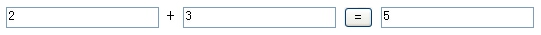

| 作者: | limodou |
|---|---|
| 联系: | limodou@gmail.com |
| 版本: | 0.1 |
| 主页: | http://wiki.woodpecker.org.cn/moin/NewEdit |
| BLOG: | http://www.donews.net/limodou |
| 版权: | FDL |
随着学习，我们的例子也开始复杂了，下一步我想实现一个简单的 web 加法器。界面会是这样：
很简单。通过本节的学习我们可以学习到：
如何处理页面表格提交的数据，并且会对 URL Dispatch 作更进一步的解释。
我们先创建一个 add.py 文件。(由于我们还没有涉及到 Django 的模型，因此象 add.py 这样的东西叫什么呢？还是称其为 View 吧。因为在 django 中，View 是用来显示的，它代替了一般的 MVC 中的 Control 的作用，因为 Django 中不是 MVC 而是 MTV (Model Template View))
from django.http import HttpResponse
text = """<form method="post" action="/add/">
<input type="text" name="a" value="%d"> + <input type="text" name="b" value="%d">
<input type="submit" value="="> <input type="text" value="%d">
</form>"""
def index(request):
if request.POST.has_key('a'):
a = int(request.POST['a'])
b = int(request.POST['b'])
else:
a = 0
b = 0
return HttpResponse(text % (a, b, a + b))
Note
请注意 action 为 /add/ ，在 Django 中链接后面一般都要有 '/' ，不然有可能得不到 POST 数据。有关更详细的关于常见问题可以参阅 NewbieMistakes 文档。
这里只有一个 index 方法。所有在 view 中的方法第一个参数都会由 Django 传入 request 对象，它就是请求数据对象，它是由 Django 自动生成。其中有 GET 和 POST 属性，分别保存两种不同的提交方式的数据，它们都可以象字典一样工作。
Note
更多关于 request 的内容参见 Request and response objects 文档。
那么我的想法就是：
进入页面就是上面的效果，页面上有两个输入文本框，一个提交按钮，一个显示结果的文本框。在两个输入文本框中输入整数，然后点击提交("="号按钮)，将返回相同的页面，但结果文本框中将显示两数相加的和。两个输入文本框分别定义为 a 和 b 。
这里的逻辑就是：先判断 POST 数据中是否有变量 a ，如果没有则表示是第一次进入，则 a, b 初始为 0 ，然后返回页面。如果有变量 a ，则计算结果，返回页面。
其实这里面有许多可以细说的东西，那么我把它们放在后面陈述。
from django.conf.urls.defaults import *
urlpatterns = patterns('',
# Example:
# (r'^testit/', include('newtest.apps.foo.urls.foo')),
(r'^$', 'newtest.helloworld.index'),
(r'^add/$', 'newtest.add.index'),
# Uncomment this for admin:
# (r'^admin/', include('django.contrib.admin.urls')),
)
增加 add 的 url 映射。
- 在 form 中的 method="post" 。你当然可以使用 get ，但是在 Django 的设计风格中认为，使用 POST 表示要对数据进行修改，使用 GET 则只是获取，这是一个设计风格，并且不仅仅属于 Django 。如果能够养成习惯是非常好的。
- Django 提供了 URL Dispatch 文档，专门讲解有关 url 映射的东西。其中有一部分是关于 url 的正则表达式解析的。原本我认为象 Karrigell 中一样，定义在 form 中的变量会自动映射为方法的参数，但是我错了。方法中的参数是从 url 中通过正则表达式解析出来的，或者是在 url_conf(即 urls.py 文件)中指定的。因此它与 Karrigell 一点也不一样。因此，如果你想从 POST 或 GET 数据中得到值，那么象我一样去做好了。使用 request.POST 或 request.GET 或还有一个可以“统吃”的方法 request.REQUEST ，它们是一个字典数据，使用起来也算方便。
从这里我更想了解方法中参数的使用，当然这个例子并没有，有机会再使用吧。关于正则表达式解析参数在 blog 和 rss 中用得是非常多的。